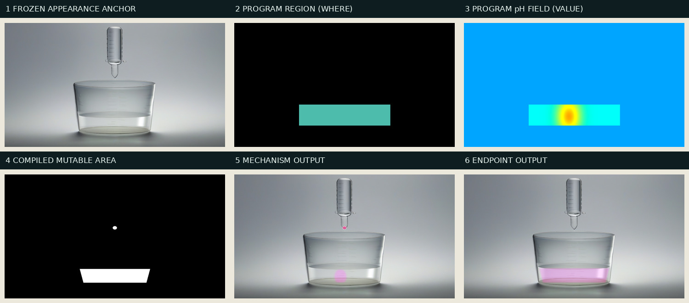
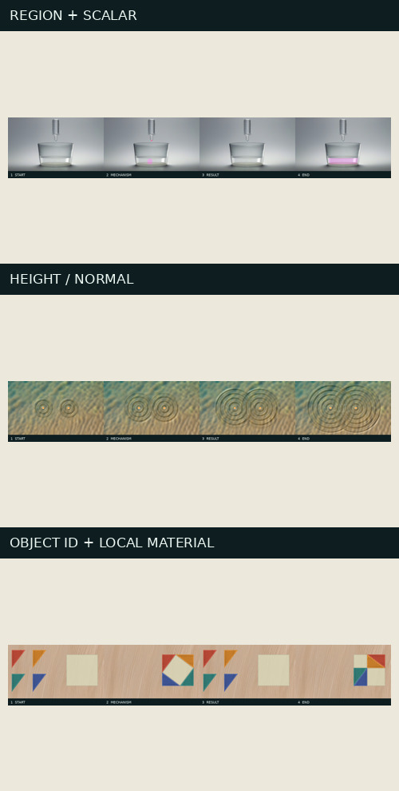
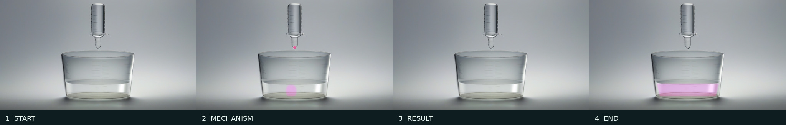
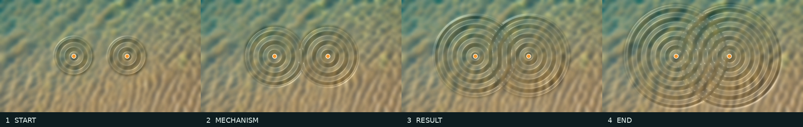
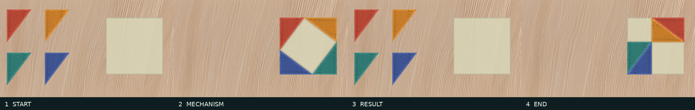

State Renderer B：一张冻结外观，程序状态生成整组关键帧
S3.3 解决“底图长什么样”；S3.4 解决“机制变化怎样可靠地画上去”。 本阶段没有让扩散模型重新画四次。每个 Case 只加载一次冻结的材料/外观图，然后读取程序导出的 region、scalar field、object identity 或 height/normal，确定性地合成四个关键帧。
实际生成过程

- Anchor：S3.3 选中的透明玻璃图，提供器材材质、相机、背景和光照。
- region（区域，也常叫 mask）：每个像素只有“允许改/不允许改”两类； 这里限定颜色只能进入液体。mask 不是神秘模型输入，而是程序写出的可编辑范围。
- scalar field（标量场）：每个液体像素保存一个 pH 数字。sigmoid 转换把 pH 8.15 附近映射成显色强度；不是把 preview 蓝黄颜色直接贴进最终图。
- 投影：程序画布是 640×360，Anchor 是 1024×576。系统从程序烧杯身份和 S3.1 canonical beaker 的 bbox 建立相对坐标，并在 Anchor 内自动搜索初始液面；没有手写最终像素坐标。
- 合成与门禁：只在 compiled mutable area 内按保持亮度的方式混色； 范围外逐像素必须完全相同。
四类数据、四种通用责任
Region
回答“哪里可以变”。MATH-02 用剩余面积 region 画 c² 或 a²+b²； CHEM-01 用液体 region 限制显色。
Scalar field
回答“每个位置变化多少”。pH 经过版本 transfer function
变成粉色强度，数值仍可追溯到原始 .npy。
Object identity
回答“是谁、现在在哪里”。MATH-02 以稳定 object_id 把同一块木纹绑定在三角形局部重心坐标；纹理跟对象走，不在屏幕上滑动。
Height / normal
回答“表面朝向怎样”。PHYS-01 对高度求梯度、构造法线， 再用固定光源计算漫反射和高光；模型不会发明节点。

主案例：酸碱滴定

| 状态 | START → MECHANISM → RESULT → END |
|---|---|
| 程序平均显色强度 | [4.5e-07, 0.14362974, 1.547e-05, 0.88814437] |
| 当前液滴数量 | [0, 1, 0, 0] |
| 稳定区最大像素差 | [0, 0, 0, 0] |
| 开始帧与 Anchor | 逐像素完全相同 |
机制帧的粉色羽流来自该帧 pH field；结果帧回到无色；终点 pH 超过指示剂阈值， 整个液体区域持续显色。器材的伪刻度、玻璃高光和背景虽不完美，但不会在四帧之间随机漂移。
查看四帧实际可修改范围； 白色是允许程序改动的像素，黑色必须与 Anchor 相同。
{kind=link}
跨案例回归：为什么它不是烧杯脚本
PHYS-01 · 双源水面干涉

同一张水面材料先做固定 8 px 模糊，以免供体自己的细碎波纹压过教学波形。
四帧只换程序 surface_height.npy；两个点源固定在 (235,180) 与 (405,180)。
程序阴影与输出明暗相关性为 [0.99999998, 0.99999975, 0.9999997, 0.99999961]。
MATH-02 · 勾股定理拼图

木纹供体是没有对象的干净背景。四块三角形由 object identity 的顶点定位；
颜色和局部木纹绑定 object_id。四帧对象数均为 4，解析面积误差为 0，内部重叠为 0，
对象局部材质最低相关性为 1.0。
一次真实失败怎样改变了框架
| 检查 | 第一轮 | 修正 | 第二轮 |
|---|---|---|---|
| 面积守恒 | 栅格计数误差 2.796% | 用顶点鞋带公式比较解析面积 | 误差 0 |
| 局部材质 | 最近邻最低相关 0.9522 | 固定重心坐标 + 双线性亚像素采样 | 最低相关 1.0 |
失败记录：g3-v1-rejected.json；
最终门禁：g3.json。
文件怎样流动
Input Contract
└─ keyframe.semantic_layers.json
├─ region.npy ───────────────→ Region operator ─┐
├─ scalar_field.npy ─────────→ Scalar transfer ├─→ frozen Anchor 上合成
├─ object_identity.json ─────→ Object operator ┤
└─ height_or_normal.npy ─────→ Normal lighting ┘
↓
frame.png + mutable.png
↓
G3 稳定区 / 机制 / 身份门禁
核心代码不含 CHEM-01、PHYS-01 或 MATH-02；
Case 差异位于 state_render_plans.json。
这使“pH 用哪个阈值”“水面光源方向”“三角形配色”等都成为可版本化输入，而不是隐藏分支。
复现命令与成本
cd /workspace/Live-Document /opt/venv/bin/python -m modules.video_model.stage3.phase4 preflight /opt/venv/bin/python -m modules.video_model.stage3.phase4 render /opt/venv/bin/python -m modules.video_model.stage3.phase4 gate /opt/venv/bin/python -m modules.video_model.stage3.phase4_finalize
本阶段新图片模型候选：0；视频候选：0。 所有输入、输出、Anchor 和语义层都有 SHA-256，见三个 Case 的 manifest、 manifest、 manifest。
结论和下一阶段
- 进入通用核心：region、scalar、object、height/normal 算子接口与 G3。
- 没有做：没有把四帧分别交给 SDXL，也没有用插值伪造程序状态。
- 已知限制：关键帧正确不代表视频中间过程正确；CHEM 羽流仍是程序光学叠加。
- S3.5：用这些已验收关键帧比较“只给首尾帧”“加 motion contract” “加稀疏中间引导”，为不同运动类型选最低但足够的指导等级。
十一份合同 smoke 全通过。报告只展示本项目实际文件，不引用外部 demo 代替证据。